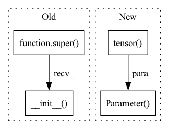

Pattern ID :7577

Before Change
class RunningNormalizer(BaseNormalizer):
def __init__(self, eps=1e-6, device: Union[str, int, torch.device]="cpu", **kwargs):
super().__init__()
self._initialized, self.mean, self.var = False, None, None
self.eps = eps
self.device = device
if "shape" in kwargs:
After Change
def __init__(self, eps=1e-6, **kwargs):
BaseNormalizer.__init__(self)
nn.Module.__init__(self)
self._initialized = nn.Parameter(torch.tensor(False), requires_grad=False)
self.eps = eps
if "shape" in kwargs:
self._initialize(kwargs["shape"])
In pattern: SUPERPATTERN
Frequency: 3
Non-data size: 4
Instances
Fragment ID: 25260985
Project Name: typoverflow/utilsrl
Commit Name: db95d8662ab7ae60ae347f5c376212dcb7e5c8a4
Time: 2022-05-12
Author: typoverflow@outlook.com
File Name: UtilsRL/net/normalizer.py
M Class Name: RunningNormalizer
N Class Name: RunningNormalizer
M Method Name: __init__(2)
N Method Name: __init__(3)
M Parent Class: BaseNormalizer,nn.Module
N Parent Class: BaseNormalizer
M File Name: UtilsRL/net/normalizer.py
N File Name: UtilsRL/net/normalizer.py
M Start Line: 57
M End Line: 65
N Start Line: 52
N End Line: 59
'>
Before Change
class StaticNormalizer(BaseNormalizer):
def __init__(self, eps=1e-6, device: Union[str, int, torch.device]="cpu", **kwargs):
super().__init__()
self._initialized, self.mean, self.std = False, None, None
self.eps = eps
self.device = device
if "mean" in kwargs:
After Change
def __init__(self, eps=1e-6, **kwargs):
BaseNormalizer.__init__(self)
nn.Module.__init__(self)
self._initialized = nn.Parameter(torch.tensor(False), requires_grad=False)
self.eps = eps
if "mean" in kwargs:
if "var" in kwargs:
self._initialize(mean=kwargs["mean"], std=None, var=kwargs["var"])
'>
Fragment ID: 25260987
Project Name: typoverflow/utilsrl
Commit Name: db95d8662ab7ae60ae347f5c376212dcb7e5c8a4
Time: 2022-05-12
Author: typoverflow@outlook.com
File Name: UtilsRL/net/normalizer.py
M Class Name: StaticNormalizer
N Class Name: StaticNormalizer
M Method Name: __init__(2)
N Method Name: __init__(3)
M Parent Class: BaseNormalizer,nn.Module
N Parent Class: BaseNormalizer
M File Name: UtilsRL/net/normalizer.py
N File Name: UtilsRL/net/normalizer.py
M Start Line: 118
M End Line: 131
N Start Line: 104
N End Line: 106
'>
Before Change
class MinMaxNormalizer(BaseNormalizer):
def __init__(self, eps=1e-6, device: Union[str, int, torch.device]="cpu", **kwargs):
super().__init__()
self._initialized = False
self.eps = eps
self.device = device
if "min" in kwargs and "max" in kwargs:
After Change
def __init__(self, eps=1e-6, **kwargs):
BaseNormalizer.__init__(self)
nn.Module.__init__(self)
self._initialized = nn.Parameter(torch.tensor(False).to(device), requires_grad=False)
self.eps = eps
if "min" in kwargs or "max" in kwargs:
self._initialize(min=kwargs.get("min", None), max=kwargs.get("max", None))
'>
Fragment ID: 25260986
Project Name: typoverflow/utilsrl
Commit Name: db95d8662ab7ae60ae347f5c376212dcb7e5c8a4
Time: 2022-05-12
Author: typoverflow@outlook.com
File Name: UtilsRL/net/normalizer.py
M Class Name: MinMaxNormalizer
N Class Name: MinMaxNormalizer
M Method Name: __init__(2)
N Method Name: __init__(3)
M Parent Class: BaseNormalizer,nn.Module
N Parent Class: BaseNormalizer
M File Name: UtilsRL/net/normalizer.py
N File Name: UtilsRL/net/normalizer.py
M Start Line: 177
M End Line: 185
N Start Line: 160
N End Line: 165